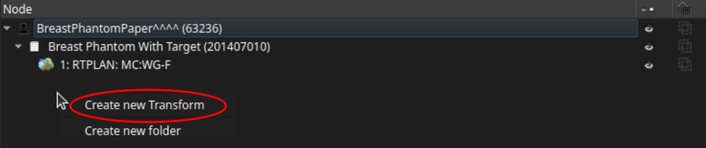
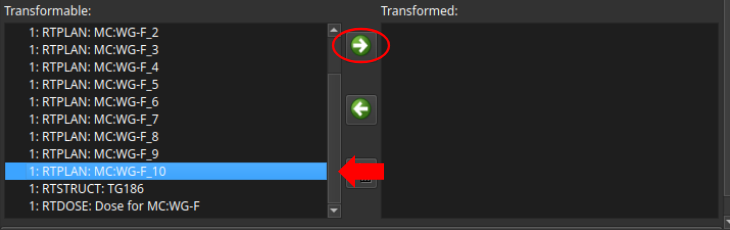
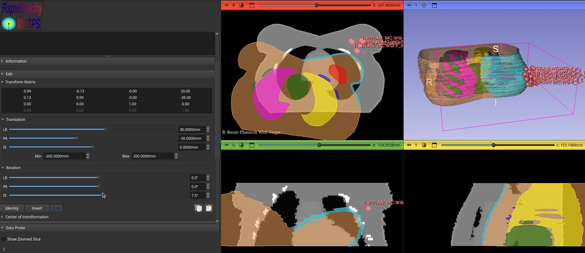
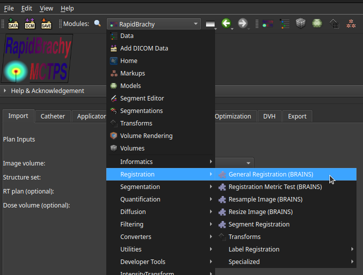
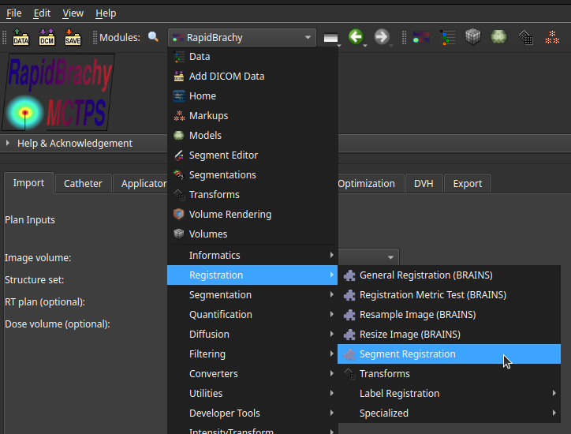

Registration
Manual Registration
Manual registration can be performed from the Transforms module . The following steps describe the standard workflow:
-
In the
Nodetable, right-click the space beneath the existing nodes and selectCreate new Transform.
-
With the new transform selected, scroll down to the
Transformablelist. Select the node you want to register, then click the right-facing green arrow to move it to theTransformedlist.
-
Use the
TranslationandRotationsections to manually adjust the position and angle of the selected node until it is properly aligned.
Automatic Registration
General Registration
Automatic registration of entire image volumes can be performed using the General Registration (BRAINS) module. Access this from the Modules drop-down menu > Registration > General Registration (BRAINS).

For detailed instructions on operating this tool, refer to the official General Registration (BRAINS) documentation.
Contour/Segment Registration
If you need to align datasets based on specific contoured structures (for example, registering an MRI segmentation to an Ultrasound segmentation), use the SlicerRT SegmentResistration module. Access this from the Modules drop-down menu > Registration > SegmentRegistration.

-
In the
Registrationmenu, select your desired inputs for theImage,Segmentation, andSegmentfields under both theFixedandMovingsections. -
Click
Perform Registration. -
Once the registration is complete, you can evaluate the alignment by toggling the
Applied registration on moving studyoption betweenNone,Rigid, andDeformable.